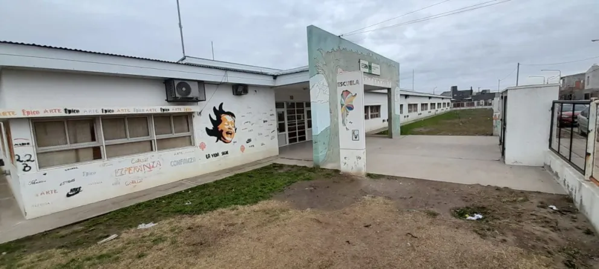

ESRN 19 Informática
Informacion sobre el material de estudio de las materia a acreditar durante el transcurso del utlimo año en la institucion ESRN 19
MATERIAS
Seguridad y Legislación
Software Libre
Componentes de Hardware
Filosofía del Software Libre
Herramientas de Diseño Gráfico
Programación de Sitios Web en HTMLs
Sistemas Operativos
Tecnologías Inalámbricas
Aplicaciones Informáticas
Derecho Informático
